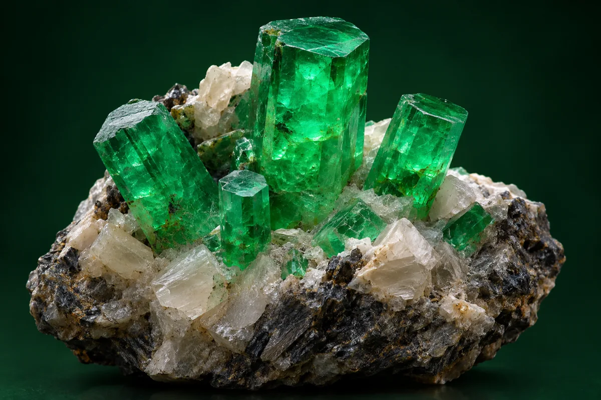

01
Reconocer gemas
Identificar características básicas relacionadas con el reconocimiento de diferentes gemas.
Fundamentos para el reconocimiento, diferenciación e identificación de gemas.
Registro personal de lectura en este navegador; no equivale a una calificación ni se sincroniza con Classroom.

El Módulo 01 introduce al estudiante en los conceptos fundamentales relacionados con la identificación de gemas.
El reconocimiento de una gema constituye uno de los fundamentos esenciales de la práctica gemológica. Para ello se consideran diferentes características y criterios que permiten orientar su identificación y diferenciación.
Este módulo proporciona una base conceptual para los contenidos posteriores del curso, preparando al estudiante para comprender las propiedades, instrumentos y métodos empleados en el análisis gemológico.
Se recomienda revisar primero el material principal del módulo y posteriormente desarrollar la actividad y la evaluación.
Al finalizar este módulo, el estudiante estará en capacidad de comprender los fundamentos iniciales relacionados con la identificación de gemas.
Identificar características básicas relacionadas con el reconocimiento de diferentes gemas.
Comprender los criterios básicos que permiten diferenciar distintos tipos de gemas.
Relacionar los conceptos estudiados con situaciones básicas de identificación gemológica.
Reconocer la importancia de aplicar criterios sistemáticos durante la identificación de una gema.
El módulo presenta los fundamentos necesarios para iniciar el proceso de identificación y reconocimiento de gemas.
Introducción a la identificación y reconocimiento de gemas.
Identificación de características relevantes para su diferenciación.
Elementos utilizados para orientar el proceso de identificación.
Aspectos básicos para distinguir diferentes materiales gemológicos.
Introducción a la clasificación de diferentes tipos de gemas.
Conceptos esenciales, ejemplo aplicado, actividad de estudio, preguntas con respuestas y referencias de consulta.
Material académico correspondiente al Módulo 01 del Curso de Gemología.
El material académico debe configurarse en Google Drive con permisos de visualización para los estudiantes.
Después de estudiar el material principal, el estudiante podrá desarrollar una actividad práctica orientada a reforzar los conceptos de identificación y diferenciación de gemas.
Consultar actividades en Classroom ↗Tres preguntas, una sola respuesta por pregunta. Al finalizar se muestran la puntuación y las explicaciones. Se permite repetir la evaluación.
Evaluación de práctica en esta página. El resultado no se guarda ni se envía a Classroom. Las preguntas de la guía PDF se conservan.
La marca de lectura se guarda en este navegador. Las entregas, calificaciones y aprobación del curso se gestionan por separado en Classroom.